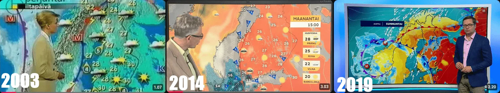

Katso vanhaa 2000-luvun säälähetystä ja katso sitten tämän päivän säälähetystä rinta rinnan, niin huomaat asian joka on tapahtunut niin hitaasti, että se on mennyt lähes huomaamatta ohi: värit ovat vaihtuneet. Ennen kartta oli rauhallinen, vihertävä ja sinertävä alue jossa keltainen merkitsi lämmintä kesäpäivää. Nyt sama 22 asteen kesäpäivä näkyy kirkkaan keltaisella tai kirkkaan punaisella, ja 28 astetta on tummanpunaisella värillä joka muistuttaa varoitusvaloa tai varoitusmerkkiä joka kertoo vaarasta.
Tämä ei ole pieni kosmeettinen muutos. Se on muutos siinä psykologisessa viestissä jonka säälähetys lähettää sinulle joka päivä, ja koska muutos on tapahtunut vuosien mittaan eikä yhdessä yössä, harvalla on vertailukohtaa siihen miltä sama lämpötila näytti kartalla kymmenen tai kahdenkymmenen vuoden takana. Kukaan ei ilmoittanut muutoksesta. Se tapahtui hiljalleen, ja sinä totuit siihen.
Mikä muuttui, milloin ja mitä tutkimus sanoo värien psykologiasta
BBC muutti sääkarttojensa väriasteikon noin vuosien 2017 ja 2023 välillä, ja muutos aiheutti Britanniassa julkisen kohun keväällä 2024 kun kävi ilmi, että 11 astetta näkyi kirkkaankeltaisella ja 41 astetta tummanpunaisella. Telegraph-lehden kommentaattori Ross Clark kuvaili karttoja ilmastopropagandan asearsenaliksi, BBC puolestaan puolustautui sanomalla, että uusi asteikko auttaa värisokeita katsojia ja kuvastaa sitä todellisuutta, joka Euroopan ilmastolle on tullut.
Sama muutos on tapahtunut eri tahdissa ympäri maailmaa. Ranskassa, Saksassa, Hollannissa ja Suomessa sääpalvelut ovat siirtyneet kohti punaisempaa asteikkoa, ja Ilmatieteen laitoksen sekä YLE:n nykykarttojen vertailu vuosituhannen vaihteen karttoihin paljastaa saman ilmiön: neutraalit vihreät ja siniset ovat väistyneet, ja lämpimät värit hallitsevat enemmän kuin koskaan aiemmin myös niillä lämpötila-alueilla jotka ovat Suomessa täysin tavallisia.

Lähde: 2003, YLE sää | 2014, YLE sää | 2019, YLE sää. Huomaatko muutoksen? Visuaalisesti rauhallinen sääkartta on muuttunut dramaattisemmaksi ja vaaraa korostavaksi.
Tässä kohtaa asia muuttuu mielenkiintoiseksi, koska psykologialla on tähän selkeä vastaus eikä se jätä tilaa tulkinnoille. Ilmiöllä on jopa oma nimensä, hue-heat hypothesis eli sävylämpöhypoteesi, ja sitä on tutkittu systemaattisesti vuosikymmeniä. Vuonna 2024 Georgialaisen yliopiston tutkijaryhmä julkaisi Nature-lehdessä mittaukset siitä, miten eri värit koetaan lämpötilan suhteen. Asteikolla jossa miinus 5 on kylmin ja plus 5 lämpimin, punainen sai arvon plus 3,75, keltainen plus 2,1, vihreä plus 1,09 ja sininen miinus 1,87. Lisäksi mitä kirkkaampi ja intensiivisempi väri on, sitä kuumemmalta se tuntuu riippumatta siitä mitä numero kartalla kertoo.
Toisin sanoen: voit katsoa kartalta että lämpötila on 22 astetta, mutta se punaoranssi väri tekee sen tuntumaan huomattavasti kuumemmalta kuin sama 22 astetta vihreiden sävyjen asteikolla. Tätä ei voi ohittaa sanomalla, että katsoja vain lukee numeron kartalta. Ihmisaivot käsittelevät väriä ja numeroa samanaikaisesti ja rinnakkain, ja värin antama tunnekuorma vaikuttaa siihen miten numero tulkitaan. Tätä hyödyntävät automaattisesti kaikki hätäviranomaiset, liikennesuunnittelijat ja teollisuuden varoitusjärjestelmät: punainen tarkoittaa vaaraa, vihreä tarkoittaa normaalia, ja tämä koodaus on niin syvään juurtunut, että se toimii ennen kuin ehdit ajatella.
Suomalaisessa kontekstissa värimuutos tekee jotain erityistä, koska Suomen ilmasto ja Välimeren alueen ilmasto ovat niin erilaiset. Jos kartta käyttää samaa väriasteikkoa Lontoossa ja Roomassa, 28 astetta näyttää samalta kummassakin paikassa vaikka Roomassa se on normaali talvi-ilta ja Lontoossa poikkeuksellinen hellejakso. Suomessa ongelma on vielä konkreettisempi: 25 astetta Helsingissä on mukava kesäpäivä joka ei vaadi erityisiä toimenpiteitä keneltäkään terveeltä ihmiseltä, mutta 32 astetta on aidosti poikkeuksellinen ja potentiaalisesti vaarallinen ikääntyneille, pikkulapsille ja kroonisesti sairaille. Jos molemmat näkyvät punaisella asteikolla jossa 25 näkyy tummanoranssina ja 32 syvänpunaisena, katsoja ei saa todellisuutta vastaavaa kuvaa siitä mikä on normaalia ja mikä on poikkeuksellista.
Tutkijat Schneider ja Nocke esittivät jo vuonna 2018 tieteellisessä kritiisissään otsikolla The Feeling of Red and Blue, että ilmastoviestinnässä käytetty punainen väri lämpimissä alueissa ja sininen kylmissä alueissa ei ainoastaan kuvaa lämpötilaa vaan lataa sen arvolatautuneilla viesteillä, joissa punainen tarkoittaa pahaa ja sininen hyvää. Crameri ja kollegat kirjoittivat vuonna 2020 Nature Communications -lehdessä väärinkäytöstä tieteellisessä viestinnässä nimenomaan silloin kun väriasteikot on valittu tuottamaan haluttu emotionaalinen vaikutelma datan sijaan. Ilmatieteen laitoksen varoitusjärjestelmässä on selkeä logiikka: vihreä tarkoittaa normaalia, keltainen kohonnutta riskiä, oranssi voimakasta varoitusta ja punainen erittäin voimakasta varoitusta, ja ongelma syntyy vasta siinä kohdassa, kun tämä varoituslogiikka sekoittuu lämpötilakartan asteikkoon niin, että punainen väri alkaa merkitsemään samanaikaisesti sekä korkeaa lämpötilaa että vaaraa, vaikka 28 asteen heinäkuun päivä ei ole vaaraksi kenellekään muuten terveelle suomalaiselle.
Näin teet vertailun itse, vanhat sääkartat löytyvät verkkoarkistosta

Paras tapa vakuuttua eron suuruudesta itse on tehdä se konkreettisesti omilla silmillä sen sijaan, että luottaa tutkimusten kuvailuihin. Tähän tarvitaan Wayback Machine eli internetin verkkoarkisto joka on osoitteessa web.archive.org, ja se on ilmainen sekä julkisesti käytettävissä eikä vaadi rekisteröitymistä.
Mene osoitteeseen web.archive.org ja kirjoita hakukenttään yle.fi/saa ja paina Enter. Sivusto näyttää sinulle aikajanan jossa on pisteitä eri päiviltä ja vuosilta, ja jokainen piste tarkoittaa taltiointia jolloin verkkoarkisto on ottanut tilannekuvan sivustosta. Valitse vuosi 2006 tai 2007 klikkaamalla sitä vuosiluvun kohdalta, minkä jälkeen näet kuukausitason kalenterin josta näet millä päivillä taltiointeja on saatavilla. Valitse jokin päivä heinäkuulta, mieluiten sellaiselta päivältä jolloin Suomessa on ollut tyypillinen kesäsää eli 20–27 asteen lämpötila, ja sivusto avaa arkistoversion sivusta josta näet miltä YLE:n sääkartta on näyttänyt kyseisenä päivänä alkuperäisine väreineen.
Avaa sitten toiseen selainvälilehteen yle.fi/saa sellaisena päivänä jolloin lämpötila on samaa luokkaa, ja katso vierekkäin miltä sama 23 tai 25 asteen kesäpäivä näyttää 2006 ja nyt. Se ero jonka näet on konkreettisempi kuin mikään tutkimus pystyy selittämään: sama suomalainen kesälämpötila, eri väri, eri tunne.
Sama haku toimii myös foreca.fi-osoitteella. Foreca on monessa mielessä parempi vertailukohde kuin YLE, koska se on näyttänyt lämpötilakarttoja koko 2000-luvun ajan jatkuvana palveluna eikä ole uudistanut ulkoasuaan yhtä radikaalisti. Wayback Machinessa on arkistoituja versioita Forecan sääkartasta aina vuodesta 2001 alkaen, eli pääset katsomaan miltä Suomen lämpötilakartta näytti jo ennen kuin nykyinen väriajattelu alkoi muotoutua. Hakusana ilmatieteenlaitos.fi paljastaa myös miten Ilmatieteen laitoksen oma karttagrafiikka on muuttunut vuosien varrella.
Jos verkkoarkisto tuntuu tekniseltä, helpompi tapa on hakea YouTubesta hakusanoilla YLE säälähetys vanha tai TV1 säälähetys 2005. Sieltä löytyy satunnaisia arkistoituja televisiolähetyksiä joissa meteorologi esittelee kartan alkuperäisine väreineen. Ero on silmillä nähtävissä muutamassa sekunnissa eikä vaadi mitään teknistä ymmärrystä.
Propaganda vai rehellinen kuvaaminen, ja miksi vastaus ei ole yksinkertainen
Tässä kysymyksessä kannattaa olla rehellinen molempien suuntien vahvuuksista eikä ampua suoraan jompaankumpaan leiriin, koska molemmin puolin on oikeita argumentteja ja yksinkertaistaminen tekee vääryyttä sekä aiheelle että lukijalle, kuten kerroin lokerointi-artikkelissani.
Niiden puolesta jotka pitävät värimuutosta perusteltuna: Suomen keskilämpötila on noussut yli kaksi astetta 120 vuodessa Ilmatieteen laitoksen omien lukujen mukaan, ja hellejaksot yleistyvät ja pitenevät. Kesä 2023 sisälsi Suomessa useita päiviä joissa Helsinki ylitti 30 astetta, mikä oli vielä 1980-luvulla harvinainen tapahtuma eikä läheskään vuosittainen. Jos lämpötilat aidosti muuttuvat ja ne jotka olivat poikkeuksellisia alkavat tulla normeiksi, on perusteltua väittää, että myös värimaailman pitää muuttua vastaamaan uutta todellisuutta eikä vanhan asteikon ylläpitäminen enää vastaa sitä miltä sää oikeasti näyttää verrattuna historiallisiin normeihin.
Niiden puolesta jotka kritisoivat värimuutosta: asteikon pitäisi kuvata absoluuttisia lämpötiloja yhtenäisesti eikä muuttua sen mukaan mitä haluamme katsojan tuntevan kyseisestä lämpötilasta. Kun BBC näyttää 11 astetta kirkkaankeltaisella, se ei kerro katsojalle että tänään on lämmintä vaan se lataa tavallisen syysiltapäivän tunnearvollisella viestillä joka ylittää sen mitä data tukee. 11 astetta lokakuussa Lontoon rannikolla on normaalia eikä vaadi mitään toimenpiteitä keneltäkään, mutta kirkkaan keltainen väri aktivoi automaattisesti ne aivojen alueet jotka yhdistävät sen varovaisuuteen.
Lisäksi on olemassa tutkimustulos toiseen suuntaan: italialaisten tutkijoiden vuonna 2023 julkaisema tutkimus löysi, että ihmiset pystyvät ymmärtämään ilmastodataa oikein eri väriasteikosta riippumatta eikä värimuutos yksinään muuttanut heidän käsityksiään ilmastonmuutoksesta. Tämä viittaa siihen, että psykologinen efekti on todellinen mutta ei niin suuri kuin sekä värimuutosten puolustajat että kriitikot antavat ymmärtää, ja ihmisillä on enemmän kykyä tulkita dataa kriittisesti kuin molempiin suuntiin argumentoivat tahot haluavat myöntää.
Rehellinen vastaus on todennäköisesti se, että molemmat asiat ovat totta samanaikaisesti: värit vaikuttavat psykologisesti ja ilmastonmuutos on todellinen, ja sääpalveluiden tekijät tasapainoilevat näiden kahden totuuden välillä tavalla joka ei aina ole läpinäkyvää katsojalle. Se mikä olisi läpinäkyvää olisi kertoa selkeästi mikä on absoluuttinen lämpötila, mikä on poikkeama historiallisesta keskiarvosta, ja käyttää värejä kuvaamaan jompaakumpaa johdonmukaisesti eikä sekoittaa niitä tavalla joka häivyttää rajan normaalin ja poikkeuksellisen väliltä.
Johtopäätös ei ole se, että sääpalvelut valehtelisivat tai että ilmastonmuutos olisi keksitty. Johtopäätös on se, että värit eivät ole neutraaleja ja asteikot eivät ole mielivaltaisia valintoja, ne ovat viestintäpäätöksiä joilla on psykologinen vaikutus riippumatta siitä mitä lukema kertoo. Kun saat säälähetyksen normaalin kesäpäivän ilmoittavan punaista tai tumman oranssia, on perusteltua pysähtyä miettimään onko tämä lämpötila aidosti poikkeuksellinen vai onko väri asteikon toisessa päässä vain siksi, että asteikko on suunniteltu siten, ja miten oma kokemuksesi kesäpäivästä muuttuisi, jos sama 25 astetta näytettäisiin vihreällä neutraalilla värillä sen sijaan, että se näytetään oranssilla joka on puoli askelta punaisen vaaran väristä. Psykologia sanoo, että kokemus muuttuisi. Tutkimus todistaa, että väri vaikuttaa tunnekokemukseen jo ennen kuin luet numeron. Säälähetysten tekijät tietävät tämän yhtä hyvin kuin psykologit.